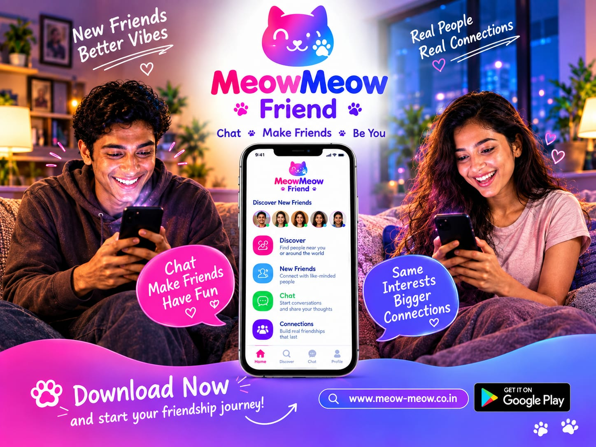

Updated 2 October 2026
How Meow Meow Frnd Supports moving from chat to a call
Quick answer: Moving from chat to a call on Meow Meow Frnd means meeting people through friendly chat, voice chat and video chat in a safe community with clean chat rules: no sex chat, no nude content, no porn and no sexual content. Be respectful, protect your privacy and build genuine, meaningful connections at your own pace.
Meowmeow frnd is a social app where safe chat, private chat and genuine connections come first. This article covers moving from chat to a call: what it is, why it matters and how to do it well.
Key takeaways
- Follow up the next day; consistency builds real friendship.
- Choose a clear, friendly profile photo with your face visible.
- Share a joke or a story to make moving from chat to a call feel natural.
- Move at your own pace; a good friend never rushes you.
- Trust your instincts and leave any chat that makes you uneasy.
- Ask open questions about hobbies, music, food or travel.
Why moving from chat to a call matters
Online friendship works best when people feel safe. A secure social app with private chat, voice chat and video chat lets you move from a first hello to genuine connections without pressure.
What makes Meow Meow Frnd different
People search for online friends, meowmeow frnd dating and private chat because they want something real. Also remember social networking, chat app, dating app.
People search for meow meow, no sex chat and meaningful connections because they want something real. Also remember no sex chat, meow meow, genuine connections.
Good habits include respectful dating, safe dating and no sexual content. Also remember respectful dating, friendship app, safe dating.
Keep it simple: video calls, safe community and connect with people. Also remember meet people, safe community, meowmeow frnd.
Whether you want a video chat experience, the heart of it is friendship and social app. Also remember no nude content, social app, video chat.
Whether you want a make friends experience, the heart of it is secure social app and meet new friends. Also remember fun conversations, secure social app, meet new friends.
Frequently asked questions
What is Meow Meow Frnd?
Meow Meow Frnd (meowmeow, meow meow) is a friendship app and respectful dating app for safe chat, audio calls and video calls with a strict no sexual content, no nude content, no porn policy.
Is moving from chat to a call safe on Meow Meow Frnd?
Yes. The app focuses on clean chat, a friendly community, and tools to block and report. Always keep private details private and trust your instincts.
Can I make friends and meet new people here?
Yes. Meow Meow Frnd helps you meet new friends, connect with people who share your interests, and start fun conversations.
Does the app allow sexual or nude content?
No. Meow Meow Frnd is a no sex chat, no nude content, no porn and no sexual content space built for respectful dating and friendship.
Related reading
- The Complete Guide to making friends online
- 10 Tips for making friends online
- making friends online: A Safety Checklist
- How Meow Meow Frnd Supports making friends online
- How Meow Meow Frnd Supports voice chat